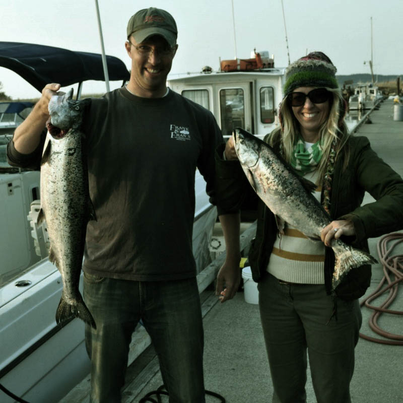
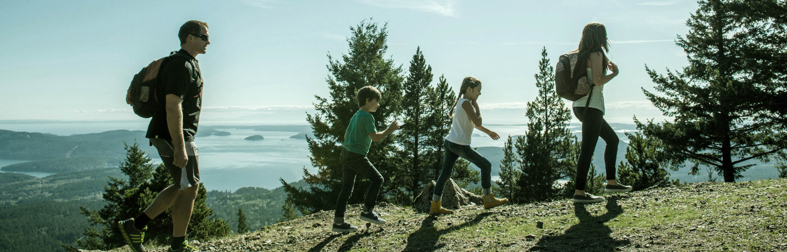
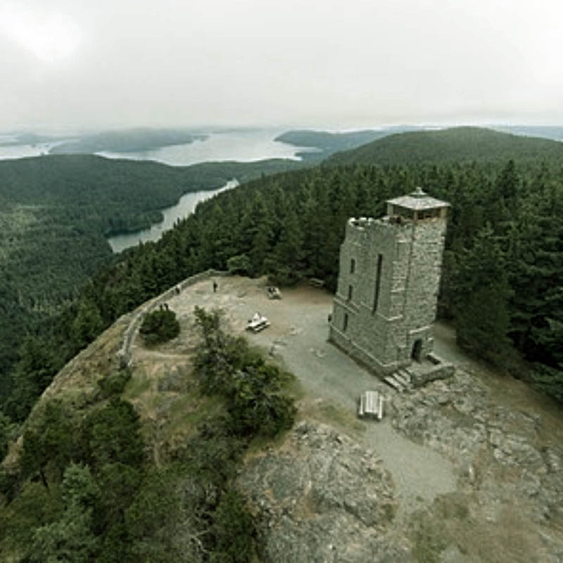
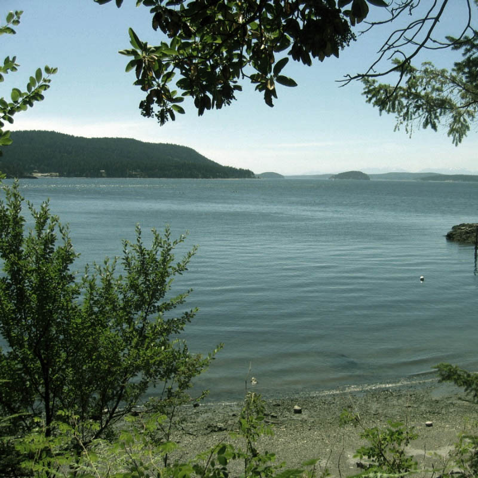
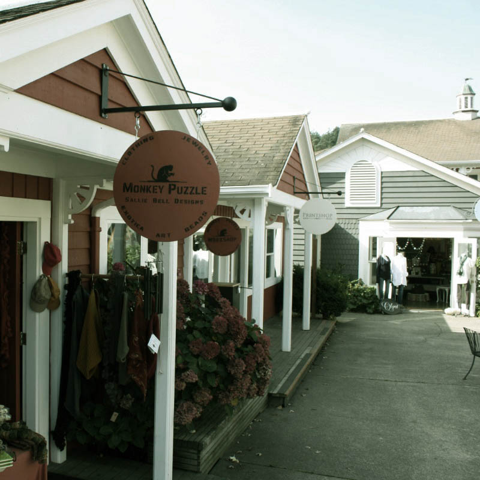
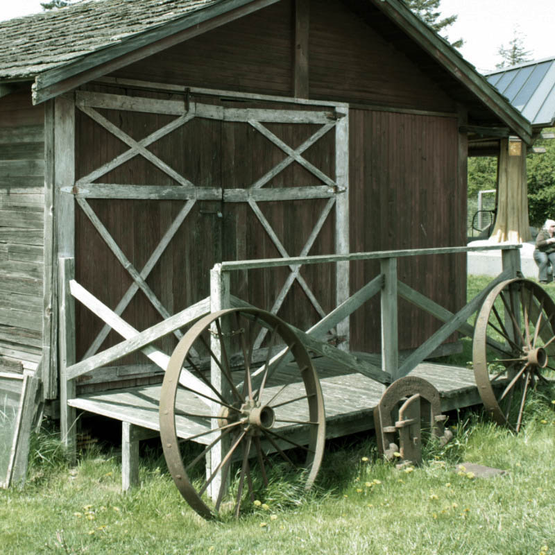
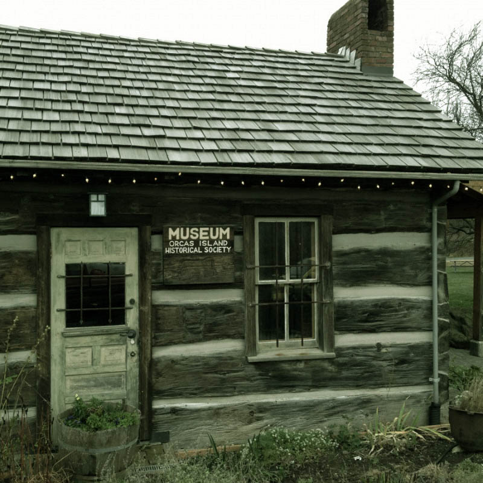
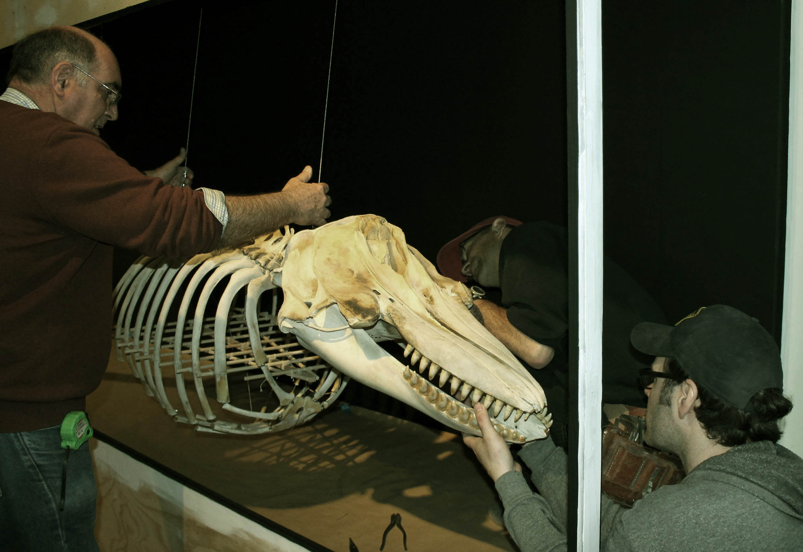
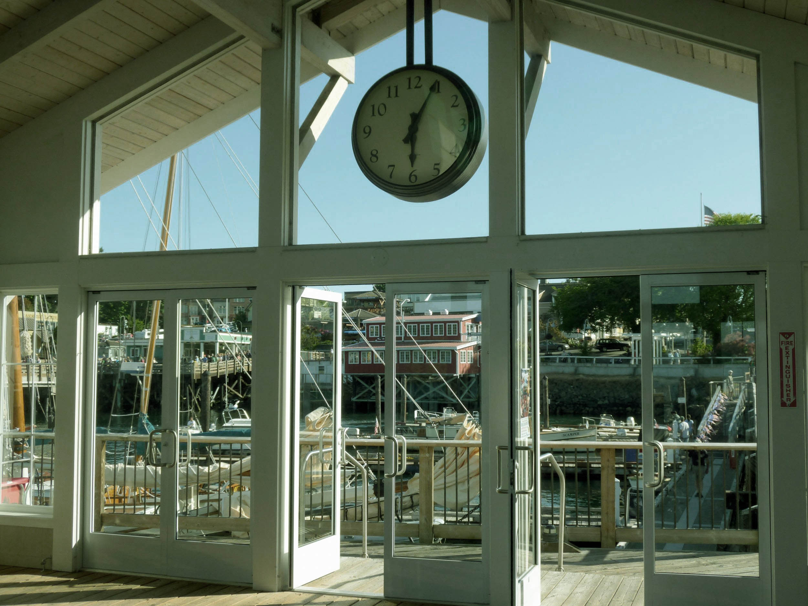

Orcas Island

Discover the beautyc of Orcas Island, The Largest Island in the San Juan Islands.
This beautiful and rugged island ranges from quiet beaches to the 2,409-foot summit of Mt. Constitution. One main road connects the various hamlets on Orcas, and this 2- to 3-hour tour touches on the island’s highlights and hidden gems. Most stops are part of the state San Juan Islands Scenic Byway, designated for their unique beauty and cultural significance.
Lodging
Looking for lodging on Orcas Island? Find everything from whale, wildlife tours and kayaking.


Upon arriving on Orcas Island via ferry, you'll enter Orcas Village & Ferry Landing, a tiny hamlet with a few shops, a post office, historic hotel and grocery store. Although generally quiet, "the Landing," as it is called by locals, is a meeting place for travelers and commuters.
8368 Orcas Rd, Orcas Island; (360) 376-2669

Dining
Tucked between two peninsulas on Orcas Island's west side, Deer Harbor is a scenic 20-minute drive from the ferry landing where you’ll find one of the few sandy beaches in the Islands. At its heart lies the Deer Harbor Marina. In this tiny gem of a village, choose from a small but quality selection of lodging, from cozy B&B's to individual cabins overlooking the marina. Get picnic food, grilled burgers, sandwiches and snacks at the Dock Store or enjoy a casual dinner at Deer Harbor Inn Restaurant.5164 Deer Harbor Road, Deer Harbor; (360) 376-3037

Dining
"Magical" is the best way to describe Orcas Island Pottery off of West Beach Road. The oldest pottery shop in the Pacific Northwest, this gem was established in 1945 and features the work of local pottery artists. This whimsical display of unique pottery placed throughout gardens, cabins, and picnic tables is a favorite destination for nature and art lovers visiting Orcas Island. 338 Old Pottery Road; (360) 376-2813

Dining
Eastsound is Orcas Island's largest village, and the hub of business and activity on this, the largest of the San Juan Islands. Grab a cup of coffee and wander the streets of this little burg any time of year, and you'll see galleries featuring local artists, farm-to-table restaurants, massage and yoga studios, as well as stylish boutiques, excellent bakeries, a well-stocked bookstore and food co-op. In Eastsound, you'll find the Orcas Island Chamber of Commerce & Visitor Information Center. Located on North Beach Road in Eastsound, the Orcas Chamber of Commerce offers information about touring beautiful Orcas Island, including maps, lodging availability, restaurants and activities. Sign up for weekly updates on the chamber website atwww.orcasislandchamber.com, and you'll be up to date on all the upcoming events, including farmers' market days, musical and theater performances, parades and more. 65 N. Beach Rd., Eastsound; (360) 376-2273

Dining
The Orcas Island Historical Museum is the only object-based, interpretive heritage facility for Orcas Island, with a permanent collection comprised of approximately 6,000 objects, paper documents and photographs. In the 1950s and 1960s, various island families donated six original homestead cabins, built during the 1870s and the 1890s, to the Society. Volunteers disassembled the structures at their original sites, then moved, reconstructed and linked the structures together to create the museum. 181 North Beach Rd., Eastsound; (360) 376-4849

Dining
Return to Olga Road, take a right, and continue to Moran State Park & Mt. Constitution. Donated by Robert Moran, the park now includes 5,252 acres, five freshwater lakes, over 30 miles of hiking trails, waterfalls and campsites. The highest point in the San Juan Islands is 2,409-foot-high Mt. Constitution, offering panoramic views of surrounding islands and the Cascade Mountains. Mt. Constitution is a must-see "side trip" off of the scenic byway. The Friends of Moran run the Summit Learning Center with kids activities, naturalist lectures, trail maps and information about natural and human history, open Memorial Day through Labor Day. 3572 Olga Rd., Olga; (888) 226-7688

Just beyond Orcas Village and the ferry landing, a left turn leads to West Sound via Deer Harbor Road. Like many of Orcas Island's small villages, West Sound has been settled for centuries, first by Coast Salish tribes, then homesteaders, fishermen and boaters. Some of the best orchard land on Orcas Island can be found in West Sound, looking out over a charming marina towards the privately owned Picnic Island. There are several bed and breakfast inns in the area, as well as the Kingfish at West Sound. Known for a delicious farm-to-table menu, the restaurant at Kingfish at West Sound is the perfect place to stay, enjoy the view, and enjoy a locally sourced meal.
4362 Crow Valley Road, Eastsound; (360) 376-4440
Just beyond Orcas Village and the ferry landing, a left turn leads to West Sound via Deer Harbor Road. Like many of Orcas Island's small villages, West Sound has been settled for centuries, first by Coast Salish tribes, then homesteaders, fishermen and boaters. Some of the best orchard land on Orcas Island can be found in West Sound, looking out over a charming marina towards the privately owned Picnic Island. There are several bed and breakfast inns in the area, as well as the Kingfish at West Sound. Known for a delicious farm-to-table menu, the restaurant at Kingfish at West Sound is the perfect place to stay, enjoy the view, and enjoy a locally sourced meal.
4362 Crow Valley Road, Eastsound; (360) 376-4440
Just beyond Orcas Village and the ferry landing, a left turn leads to West Sound via Deer Harbor Road. Like many of Orcas Island's small villages, West Sound has been settled for centuries, first by Coast Salish tribes, then homesteaders, fishermen and boaters. Some of the best orchard land on Orcas Island can be found in West Sound, looking out over a charming marina towards the privately owned Picnic Island. There are several bed and breakfast inns in the area, as well as the Kingfish at West Sound. Known for a delicious farm-to-table menu, the restaurant at Kingfish at West Sound is the perfect place to stay, enjoy the view, and enjoy a locally sourced meal.
4362 Crow Valley Road, Eastsound; (360) 376-4440

Just beyond Orcas Village and the ferry landing, a left turn leads to West Sound via Deer Harbor Road. Like many of Orcas Island's small villages, West Sound has been settled for centuries, first by Coast Salish tribes, then homesteaders, fishermen and boaters. Some of the best orchard land on Orcas Island can be found in West Sound, looking out over a charming marina towards the privately owned Picnic Island. There are several bed and breakfast inns in the area, as well as the Kingfish at West Sound. Known for a delicious farm-to-table menu, the restaurant at Kingfish at West Sound is the perfect place to stay, enjoy the view, and enjoy a locally sourced meal.
4362 Crow Valley Road, Eastsound; (360) 376-4440

A treasured Orcas Island destination for visitors and locals alike, Orcas Island Artworks in Olga offers one of the finest selections of local art and crafts in the San Juan Islands. This artist cooperative and gallery is housed in a 1936 strawberry packing plant and represents forty-five Orcas Island artists and craftspeople, working in pottery, sculpture, jewelry, glass, wood, paintings, prints, wearable art, fiber and more. As the gallery is owned and operated by the artists themselves, there is the unique opportunity to meet one or more of them on any given day. Housed in the same building rests Lascaux Cafe - a delicious stop on your journey around the island. Enjoy breakfast and lunch at this island favorite. 11 Point Lawrence Road, Olga; (360) 376-4408

At Obstruction Pass State Park, named for nearby Obstruction Island, you'll find not only the longest beach on Orcas but also one of the San Juans’ most unusual—a crescent of ocean-smoothed, marble-sized pebbles in rainbow colors. Hike in half a mile to one of the 80-acre park’s 11 first-come, first-served primitive campsites, land your kayak on Pebble Beach, or anchor out at one of three moorings. Obstruction Pass Rd., Olga; (360) 376-2326

Take a left turn out of the Orcas Island Artworks parking lot onto Point Lawrence Road and continue another ten minutes to Doe Bay Resort and Retreat. A rustic Northwest icon, Doe Bay offers accommodations in a rustic, down-to-earth environment, with soaking tubs and sauna set over a waterfall, a one-acre organic garden, and an excellent restaurant. Enjoy sea kayaking and relaxing Adirondack chairs overlooking the spectacular water view. The Doe Bay Café draws on the abundance of Orcas Island farms and fishermen for fresh ingredients. Whether you come for a personal retreat, a family gathering, or take part in an event, you will be touched by the magic and the beauty of Doe Bay. 107 Doe Bay Rd., Olga; (360) 376-2291